Córtex Estudos · 4º Semestre · Anatomia Topográfica · Aulas de 11/09 e 25/09
Anatomia do Pescoço
Vinte a trinta centímetros com tudo dentro: as fáscias e a bainha carótica, os trígonos e o que mora em cada um, a tireoide da embriologia à cirurgia, a via aérea de urgência — e, na parte 2, os quatro nervos cranianos do pescoço com seus sinais clássicos, o plexo cervical, o frênico, o simpático e a síndrome de Horner, as carótidas e jugulares, e a drenagem linfática que termina no nódulo de Virchow.
1 · O pescoço: transição vital e seus limites
- O pescoço é a transição entre o crânio e o tórax — e em 20–30 cm passa tudo: sistema respiratório, digestório, nervoso, vascular e glândulas endócrinas, "tudo aglomerado, uma estrutura juntinho da outra". 🎯 Qualquer crescimento ali comprime ou desvia um vizinho.
- Limite SUPERIOR: borda inferior da MANDÍBULA → conduto auditivo → processo MASTOIDE → protuberância OCCIPITAL.
- Limite INFERIOR: ESTERNO (manúbrio) → CLAVÍCULA → articulação ACROMIOCLAVICULAR → linha por C7.
- A região posterior (suboccipital, trapézio, esplênios) já foi vista no dorso — o alvo agora são as regiões ANTERIOR e LATERAL, onde estão as estruturas vitais.
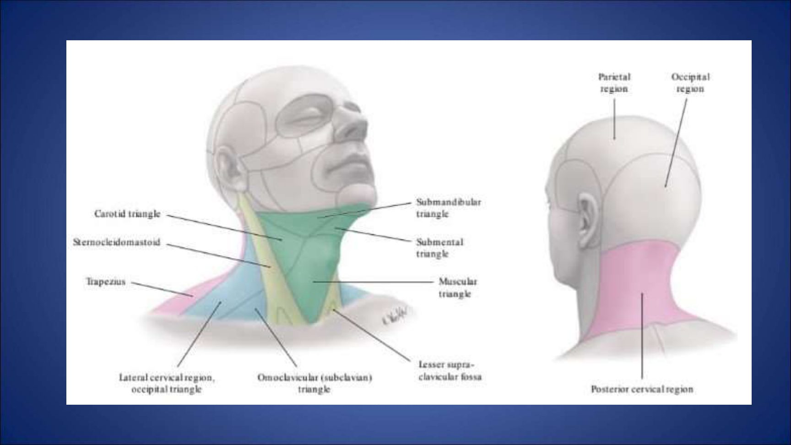
2 · As fáscias cervicais e as três lâminas
- As fáscias são um sistema contínuo de tecido conjuntivo: a fáscia cervical continua com a da parótida para cima e com a do tórax para baixo — "só muda de nome por causa da região".
- Há uma fáscia SUPERFICIAL (praticamente a gordura sob a pele) e a FÁSCIA CERVICAL PROFUNDA em TRÊS LÂMINAS:
As três lâminas da fáscia cervical profunda
- 1LÂMINA SUPERFICIAL (MUSCULAR) — o "envelope" dos músculos superficiais: esternocleidomastóideo e trapézio.
- 2LÂMINA VISCERAL (média/pré-traqueal) — reveste as vísceras: laringe, faringe, tireoide, traqueia.
- 3LÂMINA PRÉ-VERTEBRAL (profunda) — em volta dos músculos da coluna (longo da cabeça/pescoço, retos, escalenos por perto).
🎯 Para que servem — e o segredo da dissecção
As lâminas deixam tudo estabilizado e deslizando sem atrito — por isso dá para "soltar até com o dedo" os planos numa tireoidectomia. "Quando você sangra num procedimento, é porque entrou no lugar errado — não está naquela fáscia."
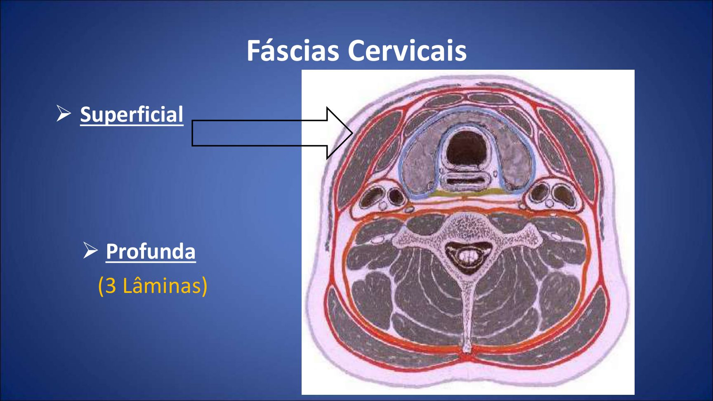
3 · A bainha carótica e sua sintopia
- 🎯 A BAINHA CARÓTICA é formada pela CONVERGÊNCIA/FUSÃO DAS TRÊS LÂMINAS da fáscia profunda — "não apareceu do nada". Vai da base do crânio à raiz do pescoço.
- Conteúdo — o feixe vasculonervoso do pescoço: ARTÉRIA CARÓTIDA (comum/interna), VEIA JUGULAR INTERNA e NERVO VAGO.
- 🎯 Sintopia constante dentro da bainha: carótida MEDIAL · jugular interna LATERAL · vago ENTRE as duas e POSTERIOR (póstero-intermediário).
- O vago é o maior nervo craniano: desce do forame jugular, atravessa pescoço e tórax e vai ao abdome — "viram que ele VAGAVA por todo o corpo".
4 · Os músculos que servem de referência
- ESCALENOS (anterior, médio, posterior): laterais profundos, das vértebras cervicais à 1ª e 2ª costelas. 🎯 Referências: o anterior está NA FRENTE da saída do plexo braquial; o médio, ATRÁS; o frênico desce na frente do anterior. São músculos ACESSÓRIOS DA RESPIRAÇÃO (elevam as costelas na dispneia).
- PRÉ-VERTEBRAIS: longo da cabeça, longo do pescoço, retos anteriores e laterais — na frente da coluna (e na frente dos corpos vertebrais, o ligamento longitudinal anterior).
- Grupo POSTERIOR (revisão do dorso): trapézio (inervado pelo ACESSÓRIO), esplênio da cabeça, semiespinais, retos e oblíquos, levantador da escápula.
- Variação muscular é rara — "quando muda, a gente documenta" (um omo-hióideo de duas cabeças já rendeu registro).
5 · Os trígonos: anterior × lateral
- O pescoço lateralizado parece um quadrilátero atravessado pelo ESTERNOCLEIDOMASTÓIDEO — que o divide em DOIS TRIÂNGULOS. 🎯 O ECM é LIMITE, não conteúdo.
- TRÍGONO ANTERIOR: linha mediana do pescoço + borda inferior da mandíbula + borda ANTERIOR do ECM (um direito e um esquerdo).
- TRÍGONO LATERAL: borda POSTERIOR do ECM + borda anterior do TRAPÉZIO + terço médio da CLAVÍCULA.
- Teto de ambos: a fáscia cervical (com o platisma, que só existe nas laterais).
⚠️ "Lateral" ou "posterior"?
Os livros chamam de trígono POSTERIOR. O professor prefere trígono LATERAL, "para não confundir com a REGIÃO POSTERIOR do pescoço" (a do dorso). Os dois nomes estão certos — na prova dele, use lateral.
- A lógica é a mesma das nove regiões do abdome: cada trígono tem seu conjunto de estruturas — saber a região é saber o que procurar (e o que uma lesão ali compromete).
6 · Trígono submentual — e o linfoma que "matou a charada"
- Único trígono ÍMPAR: entre os ventres ANTERIORES dos dois digástricos e o osso HIOIDE (base); ápice na sínfise da mandíbula (mento = queixo). Assoalho = MILO-HIÓIDEO; teto = fáscia.
- Conteúdo: gordura, LINFONODOS SUBMENTUAIS, vasos linfáticos e as pequenas veias que formam as JUGULARES ANTERIORES.
- Utilidade: infecção de lábio, afta, dente anterior → "aparecem bolinhas" ali (linfonodos reativos).
🩺 O nódulo insignificante que deu o diagnóstico
Paciente renal crônico com nódulos cervicais duros havia semanas — biópsia dos nódulos grandes junto da jugular exigiria anestesia geral. A saída: tirar o nódulo SUBMENTUAL com anestesia local. Resultado: LINFOMA — diagnóstico fechado pela via mais simples, "a região que parecia insignificante matou a charada". Linfoma compromete qualquer linfonodo do sistema.
7 · Trígono submandibular
- Limites: MANDÍBULA + ventres ANTERIOR e POSTERIOR do DIGÁSTRICO (o "V" que só a mandíbula fecha).
- Conteúdo: a GLÂNDULA SALIVAR SUBMANDIBULAR + os VASOS FACIAIS (a artéria facial cruza a glândula e passa sobre a mandíbula — palpável na frente do masseter) + LINFONODOS submandibulares + o NERVO HIPOGLOSSO na profundidade, sob a glândula, a caminho da língua.
- Assoalho: MILO-HIÓIDEO + HIOGLOSSO (+ constritor médio da faringe, nos slides). Teto: platisma + fáscia.
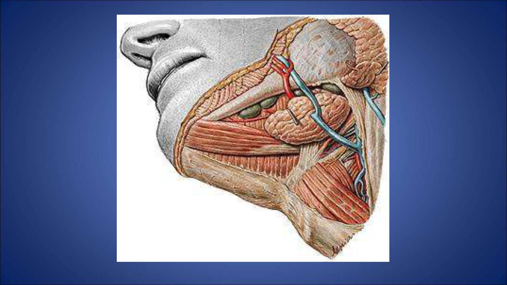
8 · Trígono carótico — o andar das lesões vasculares
- Limites: ventre POSTERIOR do DIGÁSTRICO + ventre SUPERIOR do OMO-HIÓIDEO + borda ANTERIOR do ECM.
- Conteúdo: a BAINHA CARÓTICA com a BIFURCAÇÃO da carótida (e o seio e o corpo caróticos), a jugular interna, o vago, o HIPOGLOSSO cruzando NA FRENTE das carótidas e a ALÇA CERVICAL sobre a bainha.
🩺 Facada no trígono carótico = lesão vascular grave
🎯 O raciocínio por região: lesão penetrante ali é vascular até prova em contrário. CARÓTIDA lesada: "esguicha, duas bombeadas e perdeu quase toda a volemia" — ou ISQUEMIA CEREBRAL com sequela imediata (hemiplegia) se pegar a comum/interna. JUGULAR: a veia contrai, forma hematoma — dá tempo de chegar ao hospital.
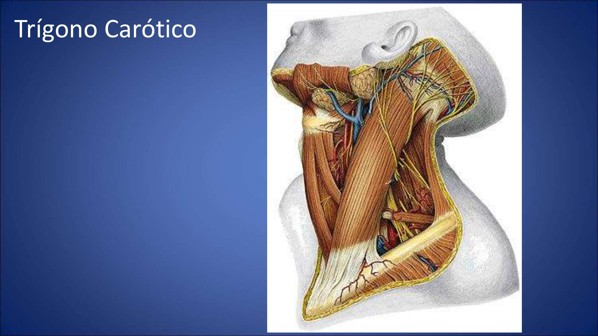
9 · Trígono muscular — as vísceras atrás da "cortina"
- Limites: ventre superior do OMO-HIÓIDEO + linha mediana + borda anterior do ECM (do hioide para baixo).
- Conteúdo: os músculos INFRA-HIÓIDEOS cobrindo as VÍSCERAS: tireoide, traqueia, laringe, esôfago. 🎯 Lesão ali = pensar em víscera, raramente vaso.
- 🎯 Os infra-hióideos são "uma cortina": para chegar à tireoide ou à traqueia, abre-se na LINHA MEDIANA e AFASTA-SE — não se corta músculo. (Supra-hióideos: milo-hióideo, gênio-hióideo, estilo-hióideo, digástrico · infra-hióideos: esterno-hióideo, esternotireóideo, tíreo-hióideo, omo-hióideo.)
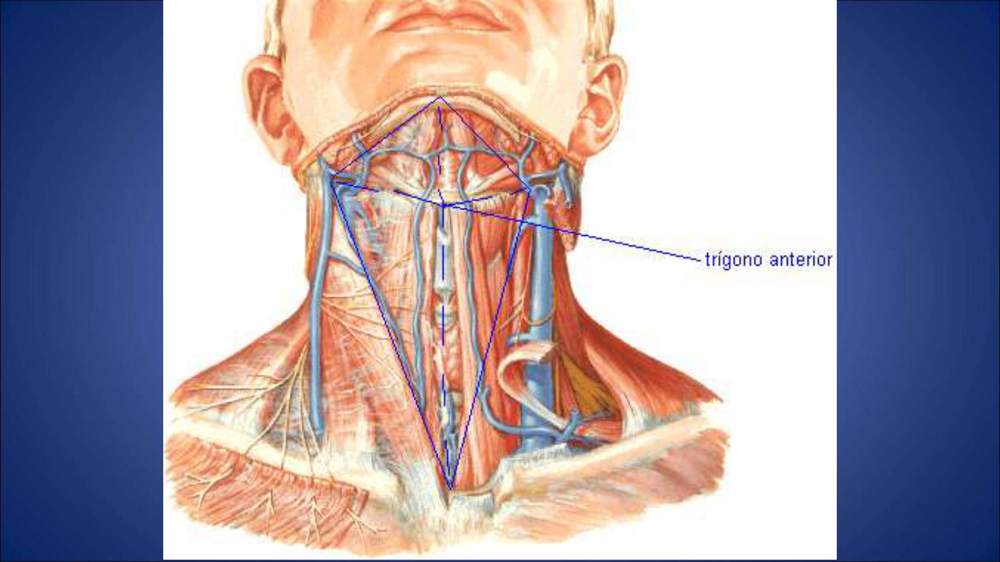
10 · Trígono lateral: occipital, supraclavicular e o acessório
- O ventre INFERIOR do OMO-HIÓIDEO subdivide o trígono lateral em: TRÍGONO OCCIPITAL (grande, superior) e TRÍGONO SUPRACLAVICULAR (ou SUBCLÁVIO — a artéria subclávia passa ali, sobre a clavícula).
- Conteúdo geral: linfonodos e NERVOS — nervo ACESSÓRIO, plexo cervical (sensitivo), porção supraclavicular do plexo braquial, veia jugular externa, artérias occipital, supraescapular e transversa do pescoço.
- 🎯 O nervo mais lesado da região é o ACESSÓRIO — ele cruza o trígono muito superficialmente (só gordura e fáscia por cima, correndo sobre o levantador da escápula). O clássico: retirada de "lipoma" com anestesia local → corta o acessório → ombro caído e braço que não sobe.
- Na parte mais baixa (raiz do pescoço), o risco muda de figura: subclávia e plexo braquial — área de trauma grave.
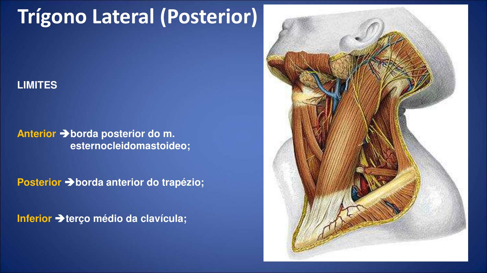
11 · Tireoide: forma, coloide e embriologia
- Formato de BORBOLETA: lobos direito e esquerdo + ISTMO; ~20 g; logo abaixo da proeminência laríngea, na frente dos primeiros anéis traqueais — dentro do trígono MUSCULAR.
- 🎯 A ÚNICA glândula que ARMAZENA hormônio: estoca em forma de COLOIDE (tireoglobulina nos folículos) e quebra sob demanda. E é a maior glândula PURAMENTE endócrina (o pâncreas é maior, mas é misto).
- Embriologia (4ª semana): nasce na BASE DA LÍNGUA (o forame CEGO) e desce pelo DUCTO TIREOGLOSSO, que depois se fecha — como a veia umbilical vira ligamento redondo.
- 🎯 Persistência do ducto = CISTO TIREOGLOSSO: epitélio tipo respiratório produz muco → "bolinha" cervical anterior que pode inflamar. "Pode cair em prova."
- Hipotireoidismo congênito: detectado no TESTE DO PEZINHO (TSH/T4); sem tratamento → atraso neurológico e físico = CRETINISMO.
12 · Sintopia da tireoide (e as paratireoides)
| Face da tireoide | Quem está lá |
|---|---|
| ANTERIOR / LATERAL | os músculos INFRA-HIÓIDEOS — o "escudo" que se afasta na cirurgia |
| MEDIAL (o que ela abraça) | traqueia, laringe, faringe, esôfago — e os NERVOS LARÍNGEOS |
| POSTERIOR | bainha carótica + tronco SIMPÁTICO cervical + PARATIREOIDES |
- 🎯 As PARATIREOIDES ficam coladas na cápsula posterior — na tireoidectomia, ficam lá: produzem o PARATORMÔNIO (metabolismo do cálcio).
- 🎯 Pegadinha do professor: "quem inerva a tireoide?" — NÃO é o laríngeo (ele é DA LARINGE, só passa colado). É o TRONCO SIMPÁTICO CERVICAL — e a inervação é só VASOMOTORA: quem comanda a produção hormonal é a HIPÓFISE (TSH).
13 · O laríngeo recorrente e a tireoidectomia
- O LARÍNGEO RECORRENTE (laríngeo inferior), ramo do vago, sobe pelo SULCO TRAQUEOESOFÁGICO (entre traqueia e esôfago), passa colado na face medial/posterior da tireoide e entra na laringe — inervando TODA a musculatura da laringe.
- Por que "recorrente"? Porque desce e VOLTA: 🎯 o DIREITO dá a volta embaixo da SUBCLÁVIA; o ESQUERDO, embaixo do ARCO DA AORTA (no mediastino) — origens diferentes, mesmo trajeto final.
- 🎯 Lesão UNILATERAL na tireoidectomia: prega vocal paralisada de um lado → ROUQUIDÃO/disfonia ("operei ontem e estou falando assim…"). Lesão BILATERAL: sussurro + FALTA DE AR — as pregas podem paralisar fechadas, obstruindo a passagem. Muito mais grave.
- Na cirurgia da tireoide, "a principal estrutura que eu tenho que ver não é a tireoide — é o nervo".
14 · Vasos e linfa da tireoide — e o nódulo que engole
- ARTÉRIAS (2): TIREÓIDEA SUPERIOR ← carótida externa (entra por cima) e TIREÓIDEA INFERIOR ← TRONCO TIREOCERVICAL da subclávia (entra por baixo). Rara: tireóidea IMA, do tronco braquiocefálico.
- VEIAS (3): superior e MÉDIA → JUGULAR INTERNA; 🎯 as INFERIORES descem DIRETO para as veias BRAQUIOCEFÁLICAS (a jugular "está longe").
- Linfa: linfonodos periviscerais (pré-laríngeos, pré-traqueais, em volta) → cadeia da jugular. No câncer, explorar e limpar os comprometidos.
🩺 O caroço que sobe quando engole
"Apareceu uma íngua" na frente do pescoço — mas era duro, não doloroso, no trígono muscular. Manobra da aula: pedir para ENGOLIR — a tireoide é aderida à laringe/traqueia, então 🎯 nódulo que SOBE E DESCE com a deglutição é da TIREOIDE. Ultrassom → PAAF → tireoidectomia total + exploração dos linfonodos. Era tumor; segue em tratamento, falando bem.
15 · Via aérea cirúrgica: crico × traqueostomia
- 🎯 URGÊNCIA = CRICOTIREOIDOSTOMIA — abrir a MEMBRANA CRICOTIREÓIDEA (entre as cartilagens tireoide e cricóidea). Referência: pomo de Adão → desce o dedo → a PRIMEIRA DEPRESSÃO (2–3 cm abaixo). Engasgo, edema de glote, trauma de face com sangue: "não vê nada na intubação → vai direto para a crico".
- 🎯 Por que NÃO traqueostomia na urgência? Porque a TIREOIDE está na frente da traqueia — extremamente vascularizada: "mexe aqui, mexe ali, começa a sangrar, e você ainda piorou".
- Criança < 10 anos: NÃO abrir (destruiria a laringe) — PUNÇÃO da membrana com agulha e ventilar/soprar até o hospital.
- A crico é provisória: no máximo 48 h (fica perto das pregas vocais → inflamação → estenose). Depois converte-se em TRAQUEOSTOMIA — eletiva, no centro cirúrgico, entre o 2º e o 3º anéis traqueais (afastando os infra-hióideos na linha média). Intubado 10–15 dias → traqueostomizar também. "Não é para errar mais isso nas provas."
16 · Parte 2 · O forame jugular e seus três nervos
- Na base do crânio, ao lado do forame magno, o FORAME JUGULAR ("um rasgado"): por ele descem a VEIA JUGULAR INTERNA e TRÊS nervos cranianos: IX (glossofaríngeo), X (vago) e XI (acessório).
- 🎯 O HIPOGLOSSO (XII) NÃO passa ali — tem o próprio CANAL DO HIPOGLOSSO, anterior ao forame magno.
- Tumor, trauma ou fratura no forame jugular → compromete os três juntos (+ a drenagem venosa): disfagia + rouquidão + ombro caído — e, se alcançar o canal vizinho, língua desviada. É a síndrome do caso da aula: massa na base do crânio com IX, X, XI e XII pegos de uma vez.
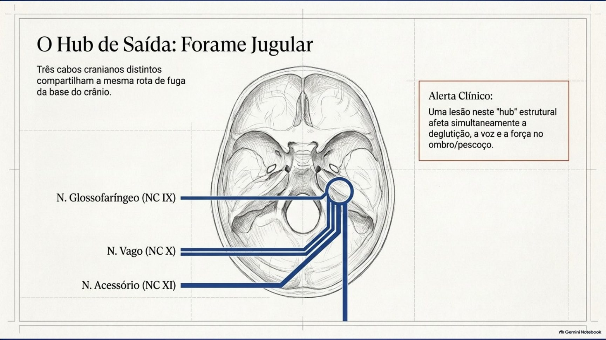
17 · Glossofaríngeo (IX): o nervo do reflexo nauseoso
- Nervo MISTO do bulbo; desce pelo forame jugular rumo à faringe e à raiz da língua.
- 🎯 Quase todo SENSITIVO: mucosa do palato, tonsila/loja amigdaliana, raiz da língua e faringe — é ele o nervo do REFLEXO NAUSEOSO (a ânsia do abaixador de língua) e da dor da amigdalite.
- 🎯 Única parte MOTORA: o músculo ESTILOFARÍNGEO (que eleva a faringe). O resto da deglutição quase não sente a falta dele.
18 · Vago (X): laríngeos e o sinal da cortina
- O vago dá os LARÍNGEOS SUPERIORES (parte alta da laringe) e os LARÍNGEOS INFERIORES/RECORRENTES — que inervam toda a musculatura da laringe (tópico 13) — e segue: brônquios, coração, pericárdio, esôfago, abdome.
- 🎯 SINAL DA CORTINA: peça "faça AAAH" — o véu palatino de um lado não sobe e a ÚVULA DESVIA PARA O LADO BOM (o lado são traciona). Movimento do palato = VAGO; o glossofaríngeo é a sensibilidade (e só o estilofaríngeo de motor).
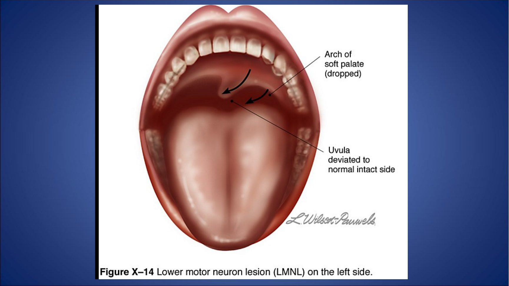
19 · Acessório (XI): o mais lesado do trígono lateral
- Exclusivamente MOTOR: ESTERNOCLEIDOMASTÓIDEO + TRAPÉZIO (todo ele). Formado por raízes ESPINAIS (que sobem pelo forame magno) + raízes CRANIANAS; sai pelo forame jugular.
- Trajeto: passa na frente/por cima da JUGULAR INTERNA → atravessa o ECM (dando ramos) → cruza o TRÍGONO LATERAL superficialmente (sobre o levantador da escápula) → TRAPÉZIO.
- 🎯 Lesão: ombro caído e dolorido, trapézio atrofiado, abdução que não passa da horizontal (deltoide e supraespinal só levam até ali) — e, se a lesão for alta, dificuldade de rodar a cabeça (ECM). Teste: elevar os ombros e virar o pescoço contra resistência.
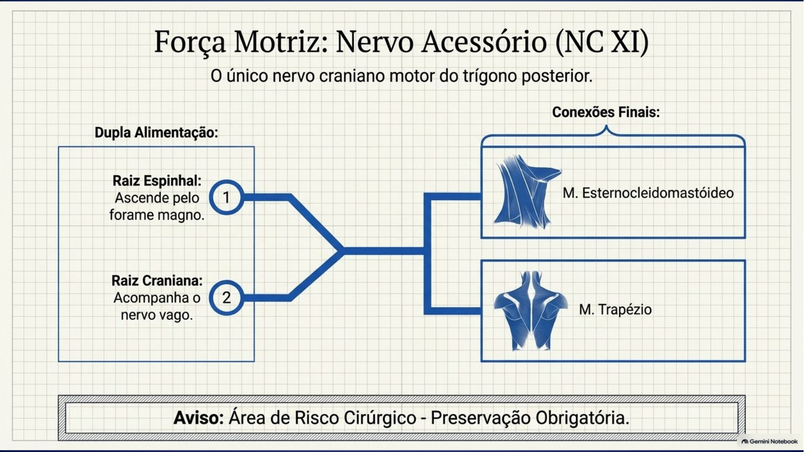
20 · Hipoglosso (XII): a língua que aponta a lesão
- Desce pelo CANAL DO HIPOGLOSSO e vai à língua: 🎯 inerva TODOS os músculos da língua, EXCETO o PALATOGLOSSO (que é do palato — vago).
- Trajeto no pescoço: 🎯 cruza NA FRENTE das carótidas interna e externa no TRÍGONO CARÓTICO, faz o arco por baixo do digástrico e entra no TRÍGONO SUBMANDIBULAR, profundo à glândula, rumo à língua.
- 🎯 SINAL DA LÍNGUA: na protrusão, a ponta DESVIA PARA O LADO LESADO — o lado são "vence" e empurra a língua para o lado atrofiado. (Compare: úvula desvia para o lado BOM; língua, para o lado DOENTE.)
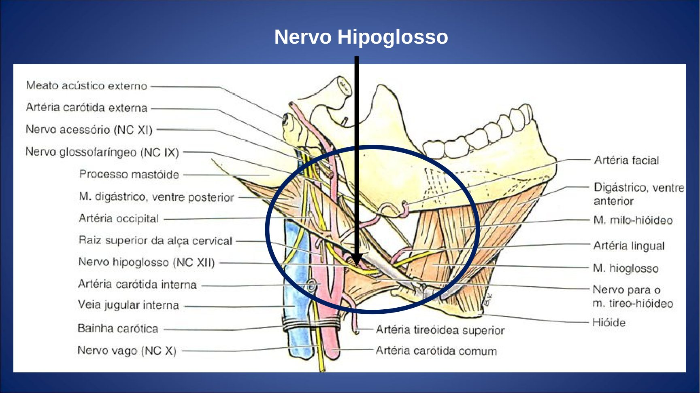
21 · Plexo cervical: o ponto de Erb e os sensitivos
- PLEXO CERVICAL = C1–C4 (de C5 em diante começa o braquial), profundo, atrás do ECM, emergindo entre o levantador da escápula e o escaleno médio.
- 🎯 Os ramos SENSITIVOS emergem TODOS de um mesmo ponto na borda posterior do ECM — o PONTO DE ERB ("ponto nervoso do pescoço"):
| Nervo | Território de pele |
|---|---|
| AURICULAR MAGNO (C2-C3) | região da orelha e do ângulo da mandíbula |
| OCCIPITAL MENOR (C2) | atrás da orelha |
| CERVICAL TRANSVERSO (C2-C3) | toda a região anterior do pescoço |
| SUPRACLAVICULARES (C3-C4; medial/intermédio/lateral) | a pele baixa do pescoço, clavícula e ombro |
- 🎯 Fronteira sensitiva: da mandíbula para cima é TRIGÊMEO (três ramos na face); o plexo cervical cuida do pescoço e da moldura da orelha.
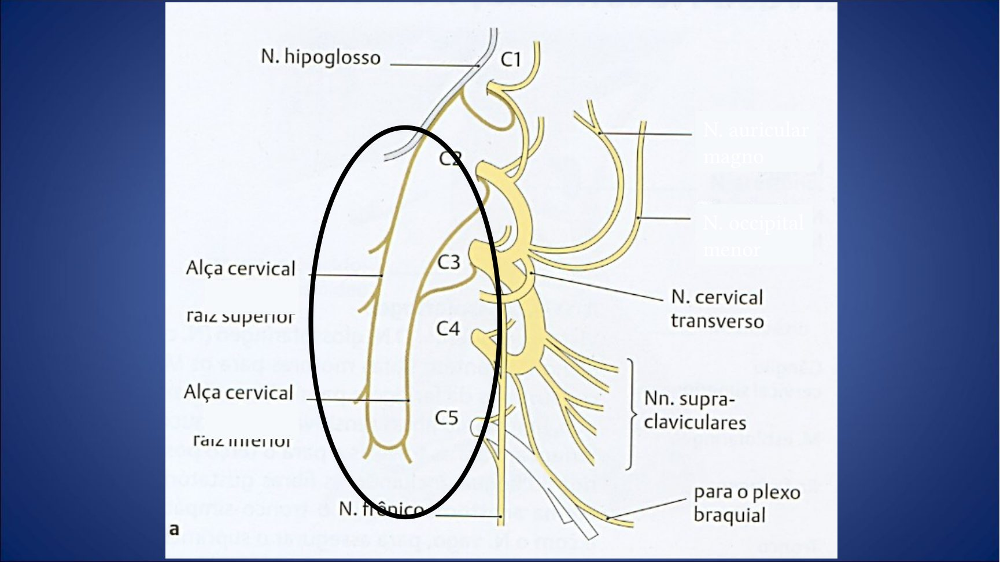
22 · Alça cervical e ramos profundos
- Ramos PROFUNDOS (motores): para os pré-vertebrais (longo da cabeça/pescoço, retos), escalenos e parte do levantador da escápula — e os dois especiais: a alça e o frênico.
- 🎯 ALÇA CERVICAL: raiz SUPERIOR (C1, que desce "pegando carona" junto ao hipoglosso) + raiz INFERIOR (C2-C3) — a alcinha fica SOBRE A BAINHA CARÓTICA, no trígono carótico, e inerva os INFRA-HIÓIDEOS (esterno-hióideo, esternotireóideo, omo-hióideo).
- Pode ser cortada sem grande prejuízo — "mas se puder preservar, melhor".
23 · Frênico: o nervo do diafragma (e do soluço)
- Formação: C4 principal + contribuições de C3 e C5. 🎯 Identificação na peça: ache o plexo braquial (entre os escalenos) → o músculo NA FRENTE dele é o escaleno ANTERIOR → o fio fino descendo sobre o escaleno anterior é o frênico (lateral à bainha carótica).
- Desce entre os vasos subclávios → tórax junto da pleura mediastinal e do pericárdio, com os vasos PERICARDICOFRÊNICOS → diafragma. É sensitivo (pleura, pericárdio, peritônio diafragmático) e o ÚNICO MOTOR do diafragma.
- 🎯 SOLUÇO = contração involuntária do diafragma por irritação do frênico: abscesso subfrênico, pneumonia de base, derrame, tumor… Soluço PERSISTENTE precisa ser investigado (RX/TC de tórax e abdome) — pode ser banal ou pode ser o primeiro sinal de algo grave.
- 🎯 Paralisia frênica: CÚPULA ELEVADA no RX — o diafragma flácido sobe, ajudado pela pressão NEGATIVA do tórax (que puxa) contra a positiva do abdome (que empurra). Clínica: dispneia aos esforços; a bilateral não abole a respiração (musculatura acessória).
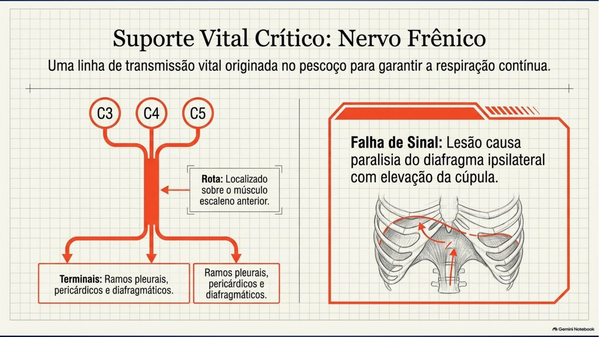
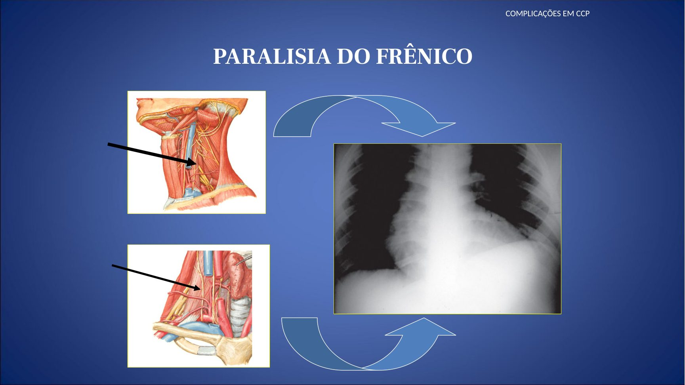
24 · Simpático cervical e a síndrome de Horner
- TRONCO SIMPÁTICO CERVICAL: 3 gânglios — SUPERIOR (nível C2, o maior), MÉDIO (C5-C6, inconstante) e INFERIOR = CERVICOTORÁCICO = GÂNGLIO ESTRELADO (fundido com o 1º torácico, na transição com o tórax).
- Onde: bem profundos, ATRÁS da bainha carótica, sobre os músculos longo da cabeça/longo do pescoço.
- O que fazem: inervação vasomotora (inclusive da tireoide), glândulas (sudorese), músculo tarsal da pálpebra superior e DILATADOR DA PUPILA — o sistema da reação de "fuga ou luta".
🎯 Síndrome de Claude Bernard-Horner
Lesão do simpático cervical (do gânglio estrelado em especial): PTOSE palpebral (cai o tarsal) + MIOSE (pupila pontiforme, sem o dilatador) + ENOFTALMIA aparente ("o olho parece menor, mais para dentro") + ANIDROSE + face quente e vasodilatada do lado da lesão.
🩺 O tumor que não está no pescoço
Tumor do ÁPICE PULMONAR pode "grudar" no gânglio estrelado e no laríngeo recorrente: paciente com Horner + rouquidão + emagrecimento e tosse — sem nada palpável no pescoço. "Desce um pouquinho: RX de tórax, tomografia, laringoscopia. As coisas estão distantes e aparecem na nossa cara — analise o paciente como um todo."
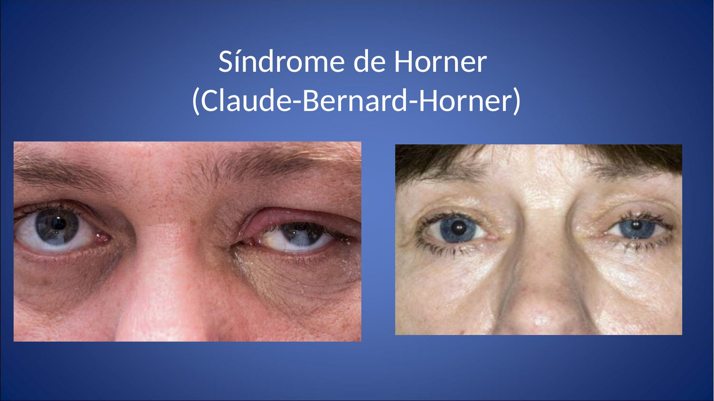
25 · Carótidas: origens, bifurcação, seio e corpo
- Origens diferentes: a DIREITA nasce do TRONCO BRAQUIOCEFÁLICO (atrás da articulação esternoclavicular); a ESQUERDA, DIRETO DO ARCO DA AORTA (dentro do mediastino). Sobem ao lado da traqueia e da laringe — onde se palpa o pulso.
- 🎯 Bifurcação em INTERNA e EXTERNA na altura de C4 — margem SUPERIOR da cartilagem tireoide (a linha do pomo de Adão).
- Na bifurcação: o SEIO CARÓTICO (a dilatação — barorreceptores, regula a pressão) e o CORPO/GLOMO CARÓTICO (quimiorreceptores — oxigênio).
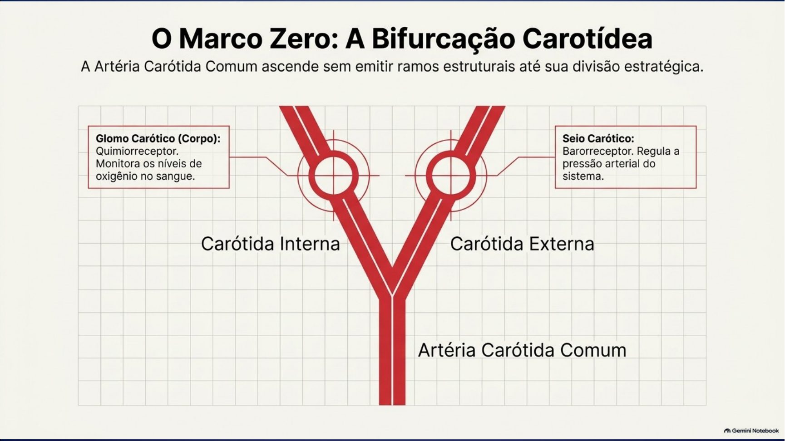
26 · Carótida externa: a regra 3-2-1 e os terminais
- 🎯 A INTERNA NÃO DÁ RAMOS NO PESCOÇO — "rota expressa" para o crânio (oftálmica, cerebrais média e anterior, polígono de Willis). Na peça: a que tem ramos é a EXTERNA.
- Ramos colaterais da EXTERNA — 3 anteriores, 2 posteriores, 1 medial: TIREÓIDEA SUPERIOR (laringe + tireoide) · LINGUAL (assoalho da boca + língua) · FACIAL · OCCIPITAL e AURICULAR POSTERIOR (couro cabeludo posterior) · FARÍNGEA ASCENDENTE (a medial, para toda a faringe).
- Terminais (2): MAXILAR + TEMPORAL SUPERFICIAL. A MAXILAR é a mais calibrosa — face profunda, dentes (alveolares), fraturas de face sangram por ela; fica atrás do colo da mandíbula. A temporal superficial atravessa a parótida e é palpável sobre o zigomático, na frente da orelha.
- A FACIAL: tortuosa, atravessa o trígono submandibular, cruza a mandíbula (palpável), dá labiais superior/inferior, mentual, lateral do nariz — e 🎯 termina no canto do olho como ARTÉRIA ANGULAR.
- Curiosidade que fecha o mapa: a TESTA é da carótida INTERNA — ramos supraorbital/supratroclear da OFTÁLMICA saindo pelos forames supraorbitais. O couro cabeludo é uma rede de anastomoses — "por isso sangra demais".
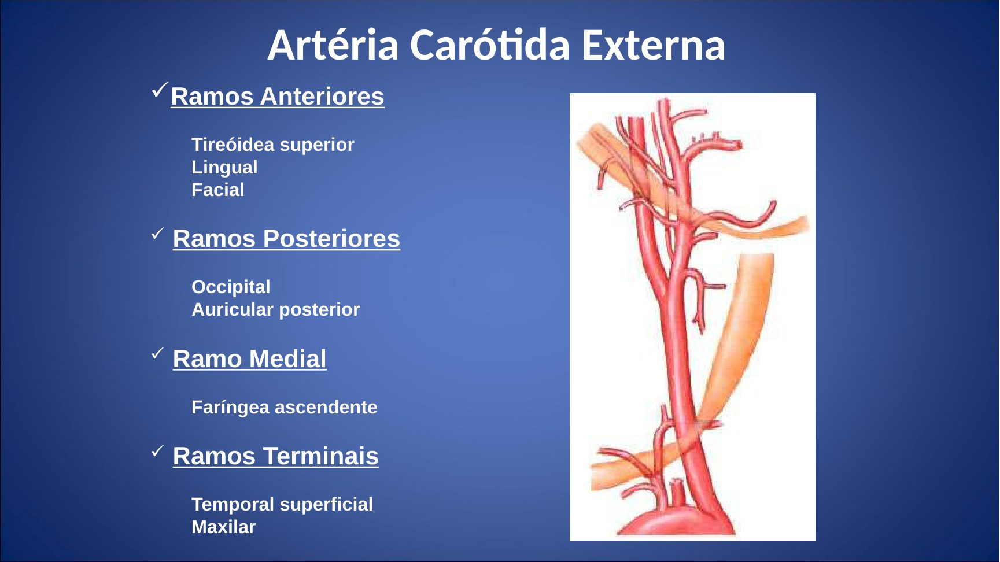
27 · Subclávia no pescoço e seus troncos
- Ramos cervicais da SUBCLÁVIA: VERTEBRAL (só um pedacinho visível — logo entra nos forames transversos rumo ao cérebro) · TORÁCICA INTERNA (desce) · TRONCO TIREOCERVICAL · TRONCO COSTOCERVICAL (menor, posterior).
- 🎯 Do TRONCO TIREOCERVICAL saem: TIREÓIDEA INFERIOR + cervical ascendente + CERVICAL TRANSVERSA + SUPRAESCAPULAR — "a arvorezinha" perto do escaleno anterior (com o frênico na frente). É o nutridor da parte baixa do pescoço: para cima é carótida, para baixo é subclávia.
28 · Jugulares: anteriores, externa e interna
- Rede SUPERFICIAL: JUGULARES ANTERIORES — um par, uma de cada lado da linha mediana, nascendo na região submentual e descendo sobre os infra-hióideos (sob a fáscia) até desembocar na jugular externa ou na subclávia. 🎯 É por elas que a tireoidectomia/traqueostomia abre exatamente na linha mediana — para não machucá-las.
- JUGULAR EXTERNA: 🎯 formada pela união da RETROMANDIBULAR (que é a temporal superficial que mudou de nome ao passar atrás da mandíbula) + AURICULAR POSTERIOR. Desce SOBRE o ECM, cruza o trígono lateral, perfura a fáscia e desemboca na SUBCLÁVIA. Fica visível na manobra de força — e muito dilatada na compressão da veia cava (o caso da aula). Serve de acesso venoso não-grave.
- JUGULAR INTERNA: 🎯 continuação do SEIO SIGMOIDE a partir do forame jugular; desce na bainha (lateral) recebendo tributárias: seio petroso inferior, faríngeas, facial, lingual, TIREÓIDEAS SUPERIOR E MÉDIA (as INFERIORES não — vão às braquiocefálicas) — e termina unindo-se à subclávia = veia BRAQUIOCEFÁLICA. É o acesso central da UTI (cateter até a cava/átrio: PVC, drogas centrais).
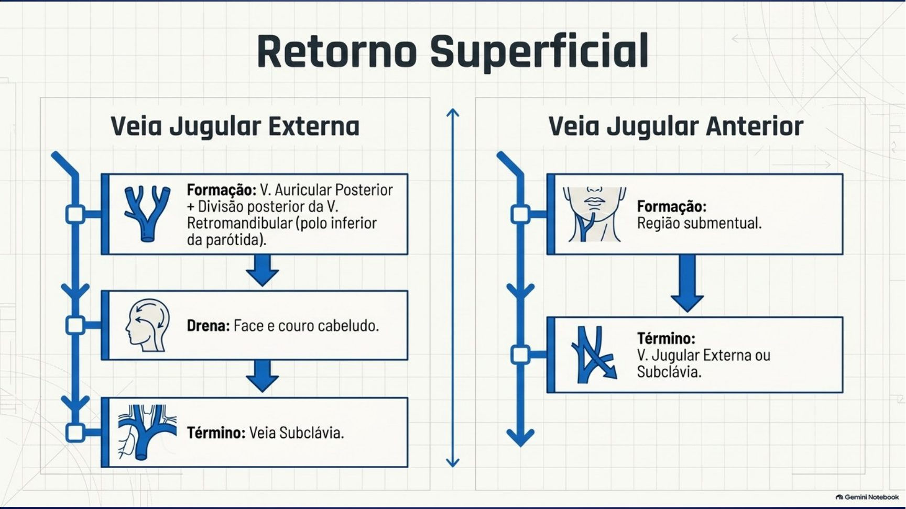
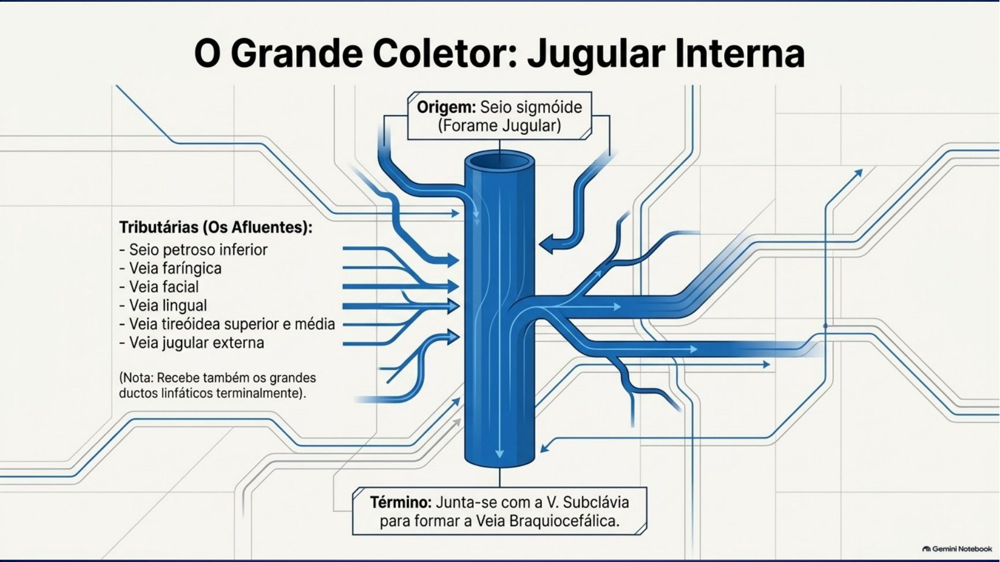
29 · Linfáticos: o colar, os ductos e o nódulo de Virchow
- As três grandes concentrações de tecido linfático do corpo: PESCOÇO, mediastino e retroperitônio — e 🎯 só o pescoço é palpável no exame físico.
- Nível superficial — o COLAR LINFÁTICO PERICERVICAL (a transição cabeça-pescoço): linfonodos occipitais, mastóideos, parotídeos, submandibulares e submentuais (+ os que acompanham a jugular externa). Viroses (rubéola, toxo, CMV) → occipitais/colar; faringite/amigdalite → jugulares; afta/lábio → submentuais.
- Nível profundo: cadeias que acompanham a JUGULAR INTERNA (jugulares altos, médios e baixos) + periviscerais (pré-laríngeos, pré/paratraqueais, retrofaríngeos) → tudo converge para os DUCTOS terminais.
- 🎯 A grande assimetria: o DUCTO TORÁCICO (nasce da cisterna do quilo, sobe na frente da coluna entre a ázigo e a aorta, vira à ESQUERDA) recebe quase o corpo inteiro e desemboca no ÂNGULO VENOSO ESQUERDO (jugular interna + subclávia esquerdas). O DUCTO LINFÁTICO DIREITO só drena o quadrante superior direito, no ângulo venoso direito.
🩺 O nódulo supraclavicular esquerdo — Virchow
O gânglio de VIRCHOW (fossa supraclavicular ESQUERDA, onde o ducto torácico termina) foi descrito para o câncer de ESTÔMAGO — mas pâncreas, útero, ovário, rim, próstata, mama, pulmão e até um melanoma escondido na planta do pé podem dar a primeira cara ali. É o diagnóstico retrógrado pela metástase: acha-se o linfonodo, biopsia, e sai-se rastreando o primário. "O lado esquerdo é muito complicado — tem muita coisa que pode aparecer ali."
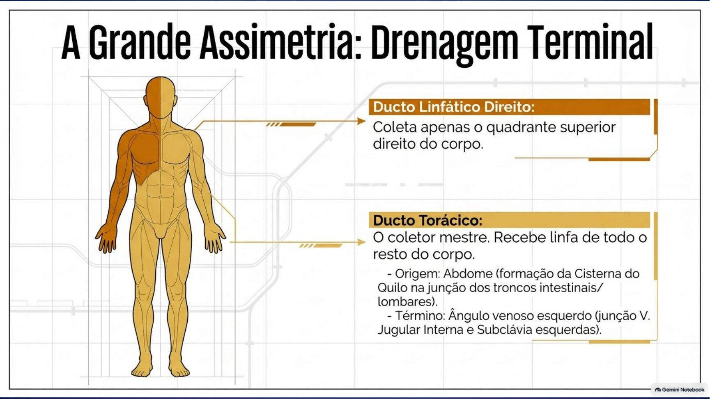
30 · Resumo rápido
- Fáscias: 3 lâminas (muscular, visceral, pré-vertebral) → fundem-se na BAINHA CARÓTICA (carótida medial, jugular lateral, vago entre-e-atrás).
- Trígonos: ECM divide anterior × lateral (ECM = limite). Anterior subdividido (digástrico + omo-hióideo) em submentual (linfonodos; o linfoma da anestesia local), submandibular (glândula + vasos faciais + hipoglosso), carótico (bifurcação + seio/corpo + hipoglosso na frente + alça; facada = vascular) e muscular (vísceras atrás da "cortina" dos infra-hióideos). Lateral = occipital + supraclavicular; acessório é o mais lesado (superficial).
- Tireoide: borboleta de 20 g que armazena hormônio; nasce na base da língua (ducto tireoglosso → cisto); sintopia = infra-hióideos / vísceras + laríngeos / bainha + simpático + paratireoides; recorrente: uni = rouquidão, bi = sussurro + dispneia; artérias superior (carótida externa) + inferior (tronco tireocervical); veias sup/média → jugular interna, inferiores → braquiocefálicas; nódulo que engole e sobe = tireoide.
- Via aérea: urgência = CRICO (membrana cricotireóidea; 1ª depressão abaixo do pomo; criança <10 = punção); 48 h → traqueostomia (2º-3º anéis; a tireoide na frente da traqueia é o porquê de não traquear na urgência).
- Forame jugular: jugular interna + IX, X, XI (XII no canal próprio). IX = reflexo nauseoso + estilofaríngeo; X = laríngeos + úvula desvia p/ lado BOM; XI = ECM + trapézio, ombro caído; XII = língua toda menos palatoglosso, língua desvia p/ lado LESADO.
- Plexo cervical (C1-C4): sensitivos no ponto de ERB (auricular magno, occipital menor, cervical transverso, supraclaviculares); alça cervical (C1+C2-C3, sobre a bainha) → infra-hióideos; FRÊNICO (C3-C5) sobre o escaleno anterior — soluço persistente investiga; paralisia = cúpula elevada.
- Simpático cervical: gânglios superior/médio/estrelado, atrás da bainha; inerva vasos (tireoide!), pálpebra e pupila → lesão = HORNER (ptose + miose + enoftalmia + anidrose) — lembrar do tumor do ápice pulmonar.
- Vasos: carótida D (braquiocefálico) × E (aorta); bifurcação em C4 (cartilagem tireoide) com seio (pressão) e corpo (O₂); interna sem ramos no pescoço (testa = oftálmica!); externa 3-2-1 + maxilar (fraturas de face) e temporal superficial; subclávia → tronco tireocervical. Jugulares: anteriores (linha mediana!), externa (retromandibular + auricular posterior → subclávia), interna = seio sigmoide → braquiocefálica (acesso central).
- Linfa: colar pericervical → profundos da jugular → ductos: torácico (corpo quase todo, ângulo venoso ESQUERDO — VIRCHOW) × linfático direito (quadrante superior direito).
🗺️ Resumão Pré-Prova — Pescoço
Revisão da véspera · Anatomia Topográfica · Aulas de 11/09 e 25/09 · só o que foi enfatizado
- Fáscia cervical profunda em 3 LÂMINAS: MUSCULAR (ECM+trapézio) · VISCERAL (laringe/faringe/tireoide/traqueia) · PRÉ-VERTEBRAL. Contínuas com parótida (acima) e tórax (abaixo).
- BAINHA CARÓTICA = fusão das 3 lâminas · sintopia fixa: CARÓTIDA MEDIAL · JUGULAR INTERNA LATERAL · VAGO entre as duas e POSTERIOR · da base do crânio à raiz do pescoço.
- "Sangrou no procedimento = entrou no plano errado" — a dissecção corre pelas fáscias.
- Escalenos: anterior NA FRENTE do plexo braquial, médio ATRÁS; inserem na 1ª-2ª costelas = acessórios da respiração; frênico desce na frente do anterior.
| Trígono | Limites | Conteúdo-chave |
|---|---|---|
| SUBMENTUAL (ímpar) | ventres ant. dos digástricos + hioide; assoalho MILO-HIÓIDEO | linfonodos submentuais (afta/lábio/dente; o linfoma da anestesia local) |
| SUBMANDIBULAR | mandíbula + 2 ventres do digástrico | glândula + VASOS FACIAIS + linfonodos + HIPOGLOSSO profundo |
| CARÓTICO | digástrico post. + omo-hióideo sup. + ECM | bifurcação + seio/corpo + hipoglosso na frente + alça cervical · facada = VASCULAR |
| MUSCULAR | omo-hióideo + linha mediana + ECM | VÍSCERAS atrás da "cortina" dos infra-hióideos (abrir na linha média e AFASTAR) |
| LATERAL (livros: posterior) | ECM post. + trapézio + clavícula (÷ omo-hióideo inf. em occipital + supraclavicular) | linfonodos e nervos — ACESSÓRIO = o mais lesado (superficial!); raiz do pescoço = subclávia + plexo |
- Carótida lesada = exsanguinação/isquemia cerebral · jugular = contrai, hematoma, dá tempo.
- ÚNICA glândula que ARMAZENA hormônio (coloide) · maior PURAMENTE endócrina · 20 g, borboleta, istmo nos primeiros anéis traqueais.
- Embrio: base da língua (forame CEGO) → ducto TIREOGLOSSO → persistiu = CISTO tireoglosso (muco). Hipotireoidismo congênito → teste do PEZINHO → sem tratar = cretinismo.
- Sintopia: ant/lat = infra-hióideos · medial = vísceras + NERVOS LARÍNGEOS · post = bainha + simpático + PARATIREOIDES (preservar! cálcio).
- RECORRENTE: uni = ROUQUIDÃO · bilateral = SUSSURRO + FALTA DE AR (pregas fecham) · sobe no sulco traqueoesofágico · D sob a subclávia, E sob o arco da aorta.
- Inervação da tireoide = TRONCO SIMPÁTICO (vasomotora) — produção é da HIPÓFISE (TSH). Laríngeo é da laringe!
- Artérias: superior ← carótida externa · inferior ← tronco tireocervical (+ ima rara) · veias: sup + MÉDIA → jugular interna · INFERIORES → braquiocefálicas.
- Nódulo que SOBE AO ENGOLIR = tireoide (aderida à laringe/traqueia).
- URGÊNCIA = CRICOTIREOIDOSTOMIA (membrana cricotireóidea = 1ª depressão abaixo do pomo) — nunca traqueo na urgência (a TIREOIDE sangra) · criança <10a = PUNÇÃO · crico vale 48 h → traqueostomia eletiva (2º-3º anéis).
- FORAME JUGULAR = jugular interna + IX + X + XI · XII tem CANAL próprio. Massa ali = os quatro sinais juntos.
- IX glossofaríngeo: sensitivo (faringe/tonsila/raiz da língua — reflexo NAUSEOSO, dor da amigdalite) · motor SÓ estilofaríngeo.
- X vago: laríngeos sup + RECORRENTES (toda a laringe) · SINAL DA CORTINA: úvula desvia p/ o lado BOM (palato = vago).
- XI acessório: SÓ motor (ECM + TODO o trapézio) · cruza jugular → ECM → trígono lateral SUPERFICIAL → trapézio · lesão = ombro caído, abdução não passa da horizontal · teste contra resistência.
- XII hipoglosso: canal próprio · cruza NA FRENTE das carótidas (trígono carótico → submandibular) · toda a língua EXCETO palatoglosso · língua desvia p/ o lado LESADO.
- Plexo cervical C1-C4: sensitivos no PONTO DE ERB: auricular magno, occipital menor, cervical transverso, supraclaviculares (acima da mandíbula = TRIGÊMEO) · ALÇA CERVICAL (C1 + C2-C3), SOBRE a bainha → infra-hióideos.
- FRÊNICO C3-C5 (C4): desce SOBRE o escaleno anterior, lateral à bainha, com os pericardicofrênicos · único motor do diafragma · SOLUÇO persistente → investigar · paralisia = CÚPULA ELEVADA (pressão negativa do tórax puxa).
- Simpático cervical: gânglios superior (C2) · médio (C5-6) · ESTRELADO (cervicotorácico), ATRÁS da bainha · lesão = HORNER: ptose + miose + enoftalmia + anidrose + face quente · lembrar do tumor do ÁPICE do pulmão (+ rouquidão).
- Carótida comum: D ← tronco braquiocefálico · E ← arco da aorta · bifurca em C4 (margem sup. da cartilagem tireoide) · SEIO = barorreceptor · CORPO/glomo = quimiorreceptor.
- INTERNA: SEM ramos no pescoço (a que tem ramos na peça = EXTERNA) · oftálmica → TESTA (supraorbital/supratroclear).
- EXTERNA 3-2-1: ant = tireóidea sup · lingual · FACIAL (→ artéria ANGULAR no canto do olho) · post = occipital + auricular post · medial = faríngea ascendente · terminais = MAXILAR (a calibrosa das fraturas de face) + temporal superficial (palpável no zigomático).
- Subclávia: vertebral · torácica interna · TRONCO TIREOCERVICAL (tireóidea inf + cervical asc + cervical transversa + supraescapular) · costocervical.
- Veias: JUGULARES ANTERIORES na linha mediana (por isso a cervicotomia mediana!) · EXTERNA = retromandibular + auricular posterior → subclávia (sobre o ECM; dilata na compressão da cava) · INTERNA = continuação do SEIO SIGMOIDE (forame jugular), recebe facial/lingual/tireóideas sup+média → + subclávia = braquiocefálica · acesso central da UTI.
- Linfa: COLAR PERICERVICAL (occipitais, mastóideos, parotídeos, submandibulares, submentuais) → profundos da JUGULAR → ductos.
- DUCTO TORÁCICO (cisterna do quilo → ângulo venoso ESQUERDO) drena quase tudo · ducto linfático DIREITO só o quadrante sup. D.
- VIRCHOW: supraclavicular ESQUERDO — estômago (clássico), pâncreas, rim, próstata, mama, pulmão, melanoma do pé… diagnóstico retrógrado pela metástase.
| Par | A diferença-chave |
|---|---|
| Úvula × língua (desvio) | úvula → lado BOM (vago) × língua → lado LESADO (hipoglosso) |
| Glossofaríngeo × vago no palato | IX = SENSIBILIDADE (nauseoso) × X = MOVIMENTO (cortina) |
| Forame jugular × canal do hipoglosso | IX, X, XI + jugular × só o XII |
| Crico × traqueostomia | URGÊNCIA na membrana (48 h máx) × eletiva no 2º-3º anel (a tireoide explica) |
| Seio × corpo carótico | PRESSÃO (baro) × OXIGÊNIO (quimio) |
| Carótida interna × externa | SEM ramos cervicais × 3-2-1 + terminais (na peça: quem tem ramo é externa) |
| Veias tireóideas | superior e MÉDIA → jugular interna × INFERIORES → braquiocefálicas |
| Jugular externa × interna | SOBRE o ECM (retromandibular+auricular post) × na BAINHA (seio sigmoide) |
| Quem inerva a tireoide | tronco SIMPÁTICO (vasomotor) — não o laríngeo (que é da laringe) |
| Ducto torácico × linfático direito | quase o corpo todo, à ESQUERDA (Virchow) × só o quadrante superior direito |
| Trígono lateral × região posterior | atrás do ECM (occipital+supraclavicular) × o dorso propriamente (trapézio p/ trás) |
Banco de Questões — Pescoço
Anatomia Topográfica · Aulas de 11/09 e 25/09 · estilo ENADE/residência.